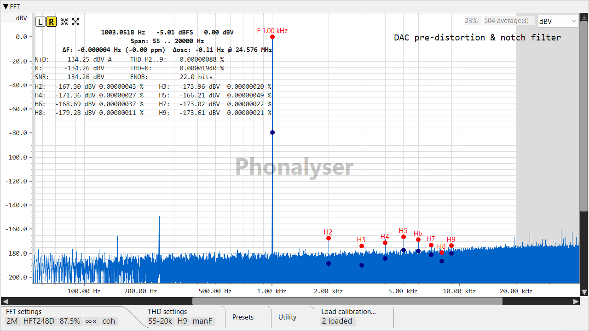

🚀 Найкоротший у світі HOW-TO — вимірювання THD на рівні частин на мільярд
Увесь тракт, від «відкрити застосунок» до «гармоніки на −180 dBV», на одному
екрані. Кожен крок має посилання на повний розділ, якщо потрібні деталі.
Зелений значок відтворення
позначає кнопку пуску (генератор, свіпи); червоний світлодіод
позначає кнопку запису (осцилограф, FFT).
Завантажте цей .frc у поданні частотної характеристики як
калібрування та активуйте його — тепер власна характеристика тракту
де-вбудовується з кожного вимірювання.
2 · Додавання режекторного фільтра (notch)
Увімкніть пасивний twin-T режекторний фільтр (notch) на 1 kHz між DAC та ADC
(навіщо потрібен notch).
Виміряйте частотну характеристику notch-фільтра
та збережіть її в окремий файл (її ви теж де-вбудуєте).
3 · Захоплення тону
Запустіть синусоїду 1003 Hz
— на кілька герців осторонь від 1 kHz, щоб відійти від гармонік мережі — з
увімкненим прив'язуванням до FFT-біна.
Почніть запис осцилографа
та FFT-аналізатора
.
Перевірте осцилограф — тон чітко над рівнем шуму, тригер
захоплено (увімкніть невеликий гістерезис, щоб шум не давав хибних спрацювань).
Налаштуйте FFT на максимальну частоту дискретизації вашої карти —
2 M @ 384 kHz, 1 M @ 192 kHz, 512 k @ 96 kHz — з
увімкненим отриманням основного тону від генератора
та Align generator = FLL.
Дочекайтеся, поки ΔF осяде до крихітного значення (зазвичай ±0.05 ppm) — це
означає, що тон фазово синхронізовано та готовий до глибокого когерентного усереднення.
4 · Передспотворення, а потім вимірювання
Відкрийте майстер передспотворення DAC — кнопка
майстра
.
Введіть початкову кількість усереднень на раунд і цільовий THD, потім
натисніть Пуск
— цикл заганяє власні гармоніки DAC у шум.
Збережіть результат у файл .dpd та застосуйте його до
генератора.
Перемкніть генератор у режим «Sine compensated» — тепер він видає тон,
чистіший, ніж може створити сам DAC.
Вставте свій DUT між DAC та notch-фільтром.
Скиньте статистику FFT та почніть накопичення
.
Зачекайте, поки H₂…Hₙ стабілізуються в міру поглиблення усереднення — і те, що ви
зчитуєте, є пристроєм, а не джерелом. 🎯

Винагорода. Тон 1003 Hz за notch-фільтром, передспотворений,
при ~730 когерентних усередненнях: THD H2…H9 показує 0.00000093 % — менше за одну частину
на мільярд, окремі гармоніки на рівні від −160 до −185 dBV.
Уперше тут? Розділ передспотворення
DAC пояснює, чому кожен крок вище зроблено саме так — notch, ручний основний тон,
глибоке усереднення.